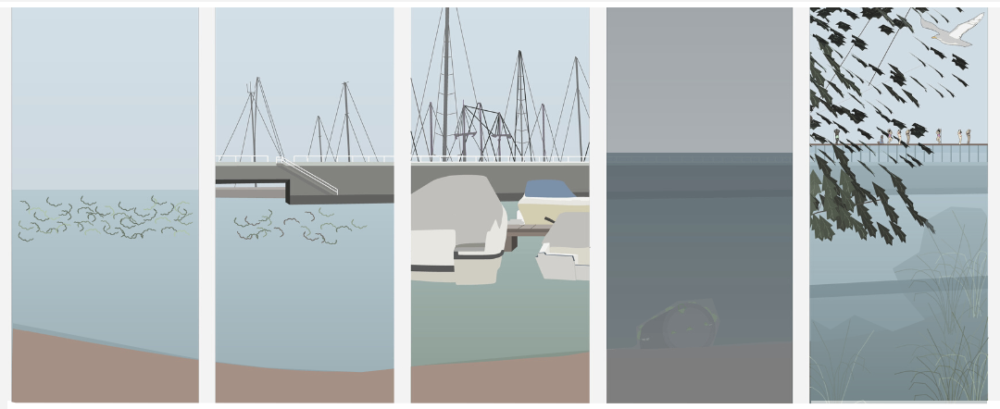
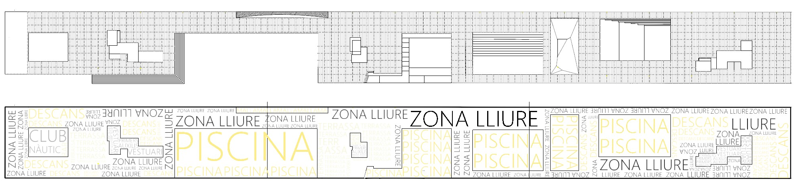
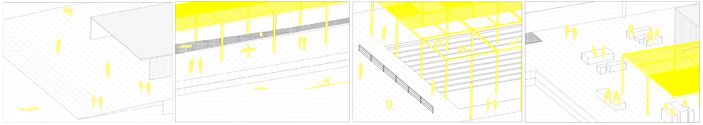
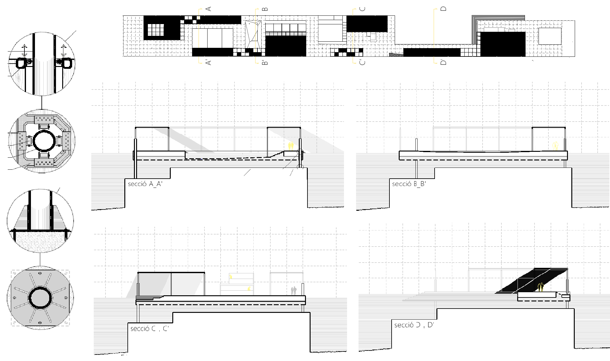
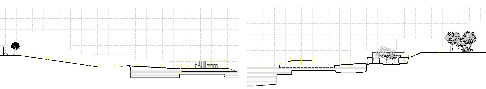
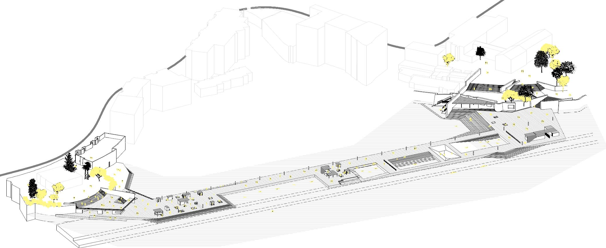

Recuperar el horizonte
USOS ALTERNATIVOS PARA LA INFRAESTRUCTURA VIARIA TRAS LA SUBIDA DEL NIVEL DEL MAR EN EL PUERTO DE PALMA DE MALLORCA
Keywords: cambio climático, nivel del mar, ocio
Nos situamos en un escenario donde el litoral balear retrocede casi 200 metros como consecuencia de la subida del nivel del mar en 2,5 metros, lo que afecta a la Avenida Gabriel Roca, principal eje de comunicación con el centro socioeconómico de la isla. El objetivo del proyecto de rehabilitación es recuperar la línea de costa aprovechando el antiguo paseo marítimo inutilizado y las infraestructuras hundidas a lo largo del litoral.

El diseño propone crear un espacio de ocio donde convivan al mismo tiempo la naturaleza y el ser humano. La apertura de piscinas flotantes en el paseo marítimo crea un nuevo oasis de ocio para la ciudad donde la gente podrá disfrutar del baño, las vistas, los juegos y muchas otras actividades, además de contribuir a la creación de espacios públicos verdes que optimizarán la proliferación y protección de la flora y la fauna.


Se trata de un conjunto de plataformas flotantes colocadas en puntos estratégicos a lo largo de la costa de la capital mallorquina cuyo uso será de ocio y que devolverán la primera línea de mar a los humanos, en oposición a la predominación del transporte rodado que existía anterior a la inundación. Se reutilizan las infraestructuras existentes, como es el caso de las carreteras sumergidas, las cuales se utilizarán como base para los pilares que sostienen las nuevas plataformas. Estas a su vez, al ser flotantes no quedan afectadas por la subida del nivel del mar, lo que prolonga su vida útil.


